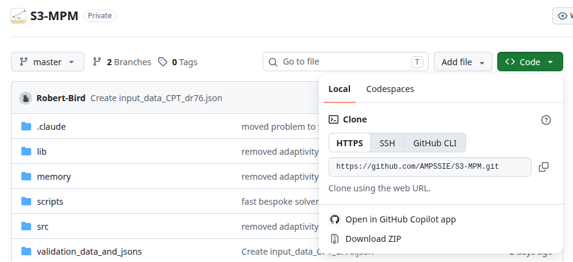

Install and Run
Requirements¶
S3-MPM is a Julia package and runs anywhere Julia is supported.
Operating system: Linux, macOS, and Windows are all supported. Most development and testing has been done on Linux.
Julia version: 1.12 or newer. Earlier releases may work but are not actively tested.
Hardware: A typical desktop or laptop is sufficient for the tutorial problems. For larger 3D problems with refined meshes it is recommended to use an HPC with at least 10 cores, at least 60 GB of RAM and 10 GB of free disk for outputs. If you are using a GPU it is also recommended that the GPU has 60 GB of GPU memory (data-centre GPUs such as the NVIDIA A100 or H100 have 40-80 GB).
Software requrements tooling:
- Julia - at least version 1.12.
- A text editor with JSON support for editing
input_data.jsonfiles - VS Code with the Julia extension is a sensible default. - ParaView or VisIt for visualising the VTU/VTK output, support and tutorial detail is only provided for Paraview.
Optional:
- Git for cloning the source repository.
- A container runtime (Docker, or Apptainer/Singularity on HPC) to run Julia and S3-MPM without installation - see deploying with containers.
Julia runtime¶
The simplest deployment is to install Julia and run S3-MPM from source:
Julia installation
Use the official installer from julialang.org/downloads, or on Linux/macOS use the juliaup toolchain manager:
Verify the install with julia --version.
Downloading S3-MPM from GitHub
The source lives at github.com/AMPSSIE/S3-MPM.
Use git clone it to pull it from GitHub your current directory, updating later is then a single git pull:
If you prefer to download the zip containing the code, go to github.com/AMPSSIE/S3-MPM

Without git, use the green Code button on the GitHub page, choose Download ZIP and unzip it wherever you want to keep it.
Both method will produce an S3-MPM folder which contains the Julia code.
S3-MPM installation
1. Download the code from GitHub, as described above.
2. Start Julia and install the S3-MPM package. Open a powershell (Windows) or terminal (Linux/mac) window and start julia with
The-t 4 is the number of CPU threads; 4 threads is sufficient when the analysis is on a GPU but generally for a CPU run set the number of threads to the numbe of physical cores -2. Julia runs on one thread if -t is omitted.
In the Julia REPL, change directory in S3-MPM and install the S3MPM package. This installs the exact dependencies recorded in Manifest.toml and starts the parallel workers that S3-MPM uses:
julia> cd("path/to/S3-MPM")
julia> using Pkg;
julia> Pkg.activate(".")
julia> Pkg.instantiate
julia> using S3MPM
If everything succeeds the REPL prints the package versions being resolved.
3. Run a problem. Copy a tutorial input_data.json (for example from Tutorial 1 or Tutorial 2) into the folder you want to work in, and run it from that folder:
input_data_sim.jsoncontains the simulation data;S3MPM.non_linear_solve()with no argument readsinput_data.json.- The input file must have
"GPU": "off".
This steps through the load increments configured in the JSON and writes .vtu, .vtk and .csv output files into the folder you ran from. Open the VTU/VTK files in ParaView (or VisIt) to inspect the deformed mesh and the stress / displacement fields.
Container Runtime¶
A container image bundles Julia, S3-MPM and its dependencies, so nothing needs installing on the host machine. This is the usual route on HPC.
Images are built by a GitHub Actions workflow in the S3-MPM repository and published to the GitHub container registry. The latest build of the default branch is:
For work you need to reproduce later, pull a fixed version tag such as ghcr.io/ampssie/s3-mpm:v1.0.0 rather than latest, so that the image cannot change underneath you.
Placeholder
This image is not published yet, so the address above will not resolve. Until it is, install S3-MPM through the Julia runtime route above.
Install whichever runtime suits your machine, then pull the image:
Docker
1. Install Docker using the official guide for your system: Windows, macOS or Linux.
2. Pull the image and start a container from the folder holding your input_data.json:
docker pull ghcr.io/ampssie/s3-mpm:latest
docker run --rm -it -v ${PWD}:/work -w /work ghcr.io/ampssie/s3-mpm:latest input_data_sim.json -t 4
input_data_sim.jsoncontains the simulation data; if it is not given it defaults toinput_data.json.-t 4is the number of CPU threads; if it is not given it defaults to 4. For the fastest performance on a CPU use the number of physical cores minus 2; if the analysis is on a GPU, 4 threads is sufficient.- The input file must have
"GPU": "off".
Requirements: Docker Desktop's WSL 2 engine, which is the default. The NVIDIA driver you already have on Windows is all that is needed.
docker pull ghcr.io/ampssie/s3-mpm:latest
docker run --rm -it --gpus all -v ${PWD}:/work -w /work ghcr.io/ampssie/s3-mpm:latest input_data_sim.json -t 4
input_data_sim.jsoncontains the simulation data; if it is not given it defaults toinput_data.json.-t 4is the number of CPU threads; 4 threads is sufficient when the analysis is on a GPU, and if it is not given it defaults to 4.--gpus allonly makes the GPU visible to the container; the input file must also have"GPU": "on".
sudo docker pull ghcr.io/ampssie/s3-mpm:latest
sudo docker run --rm -it -v "$PWD":/work -w /work ghcr.io/ampssie/s3-mpm:latest input_data_sim.json -t 4
input_data_sim.jsoncontains the simulation data; if it is not given it defaults toinput_data.json.-t 4is the number of CPU threads; if it is not given it defaults to 4. For the fastest performance on a CPU use the number of physical cores minus 2.- The input file must have
"GPU": "off".
Requirements: Needs the NVIDIA Container Toolkit.
sudo docker pull ghcr.io/ampssie/s3-mpm:latest
sudo docker run --rm -it --gpus all -v "$PWD":/work -w /work ghcr.io/ampssie/s3-mpm:latest input_data_sim.json -t 4
input_data_sim.jsoncontains the simulation data; if it is not given it defaults toinput_data.json.-t 4is the number of CPU threads; 4 threads is sufficient when the analysis is on a GPU, and if it is not given it defaults to 4.--gpus allonly makes the GPU visible to the container; the input file must also have"GPU": "on".
Requirements: Macs have no NVIDIA GPU, so S3-MPM runs on the CPU.
docker pull ghcr.io/ampssie/s3-mpm:latest
docker run --rm -it -v "$PWD":/work -w /work ghcr.io/ampssie/s3-mpm:latest input_data_sim.json -t 4
input_data_sim.jsoncontains the simulation data; if it is not given it defaults toinput_data.json.-t 4is the number of CPU threads; if it is not given it defaults to 4. For the fastest performance use the number of physical cores minus 2.- The input file must have
"GPU": "off".
Docker runs in the folder you call it from, so keep input_data.json there and the .vtu and .csv results appear beside it.
Apptainer (Linux only)
Apptainer is the usual choice on HPC as it runs without administrator rights. Check whether your cluster already provides it, if not ask your administrator.
To install locally on your Linux machine follow the installation guide with details for the GPU support - the --nv flag passes NVIDIA GPUs into the container.
To obtain the image pull the image into a local .sif file in your current directory:
input_data_sim.jsoncontains the simulation data; if it is not given it defaults toinput_data.json.-t 4is the number of CPU threads; if it is not given it defaults to 4. For the fastest performance on a CPU use the number of physical cores minus 2.- The input file must have
"GPU": "off".
input_data_sim.jsoncontains the simulation data; if it is not given it defaults toinput_data.json.-t 4is the number of CPU threads; 4 threads is sufficient when the analysis is on a GPU, and if it is not given it defaults to 4.--nvonly makes the GPU visible to the container; the input file must also have"GPU": "on".
Apptainer runs in the directory you call it from, so keep input_data.json beside s3-mpm.sif and the .vtu and .csv results appear there too.
Singularity (Linux only)
SingularityCE is a common choice on HPC as it runs without administrator rights. Check whether your cluster already provides it with singularity --version; if not, ask your administrator.
To install locally on your Linux machine follow the installation guide, with details for the GPU support - the --nv flag passes NVIDIA GPUs into the container.
To obtain the image pull it into a local .sif file in your current directory:
To run the file call in the terminal, or include in your job script:
input_data_sim.jsoncontains the simulation data; if it is not given it defaults toinput_data.json.-t 4is the number of CPU threads; if it is not given it defaults to 4. For the fastest performance on a CPU use the number of physical cores minus 2.- The input file must have
"GPU": "off".
input_data_sim.jsoncontains the simulation data; if it is not given it defaults toinput_data.json.-t 4is the number of CPU threads; 4 threads is sufficient when the analysis is on a GPU, and if it is not given it defaults to 4.--nvonly makes the GPU visible to the container; the input file must also have"GPU": "on".
Singularity runs in the directory you call it from, so keep input_data.json beside s3-mpm.sif and the .vtu and .csv results appear there too.
Cloud computing¶
To do:
Visualisation installation¶
S3-MPM writes .vtu, .vtk and .csv files. ParaView opens the VTU and VTK output, and is the viewer the tutorials use:
ParaView installation
Download the latest release from paraview.org/download. The standard build is all that is needed.
Download the .msi installer and run it.
Download the .dmg, choosing the Apple silicon or Intel build to match your Mac, then drag ParaView into Applications. If macOS refuses to open it, right-click the app and choose Open.
Install your distribution's package, for example sudo apt install paraview on Debian and Ubuntu, or sudo dnf install paraview on Fedora. Alternatively download the .tar.gz, unpack it and run bin/paraview.